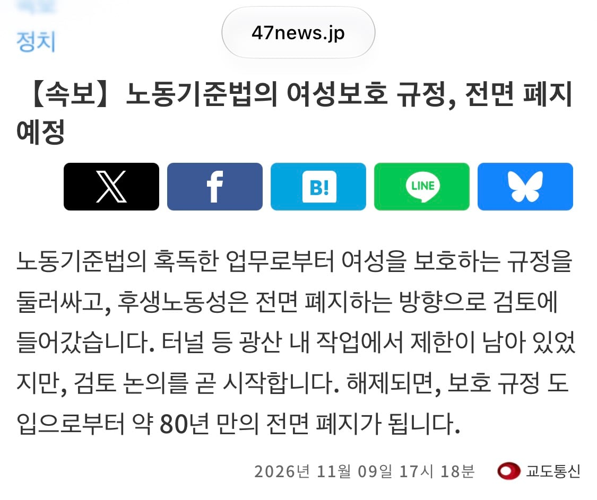

https://www.47news.jp/15205451.html

https://www.47news.jp/15205451.html
진짜 평등이네
역시 선진국
저기는 트럭이나 중장비도 여자가 하는 경우도 있던데 저게 맞지
한국도 있음
광부는 이제 웬만한 남자도 안하려 하는 직업이라서 그런가
사실상 사문화된 법은 정리하는 게 맞긴 함
역시 선진국
근로 하지 않는군
여자도 광부해도 된다고 해서 광산회사들이 여광부를 뽑으려고 할지는
터널공사 할때 거들순 있겠지 일본은 여성 공사장 인부들도 꽤 있음
진취적이네
그게 한중일 공통인 미신 중에 하나가 광산이나 터널 등등 공사장에 여자가 들어오면 부정탄다는 게 있어서
한국 광부들 사이에는 심지어 마누라가 생리하는 광부는 그날 작업에서 제외 시키기도 했고 아무튼 뿌리깊은 민간신앙(?) 같은 게 있어서 꽤 오래동안 여성의 진출이 기존 남성 잡업자들 때문에 거부되었음.
한 80년대인가? 서울 지하철 공사장 취재를 여자 기자가 하게 되었는데 그때 공사장 인부들이 빠루하고 해머 들고서 입구 막고 협박해서 돌아갔다는 썰도 있을 정도로...
우리나라 근로기준법이 일본의 노동법 따라서 만든거라 같은 규정이 있구나
일본도 유럽 따라한거로 앎. 애초 일요일은 쉬어야한다는 법 규정부터 기독교식 안식일 문화다보니
이게 맞지
우리나라 위선자들이 엿같은게
남녀평등에 가까워지니까 갑자기 평등 이ㅈㄹ하면서
평등을 깨버림. 예전엔 군대 남자만가는거 아무생각 없었는데 위선자들때문에 그거로 싸우게되고 오히려 임금 치안 법 등등에서 갑자기 남녀평등이랑 멀어지게됨.
그게 고작 표때문에 나라가ㅋㅋ

10년 우리나라도 10년남았군
이젠 정말 무한경쟁 뿐이야
역시 선진국이다
우리나라 하려나?
페미에 점령당해서 안 할것 같기도
몇번 있었던 개헌 논의에서 여성 보호 문구를 빼는 시도는 있었음.
여성보호 강화 안해서 감사하다 해야할 꼴인데 무슨ㅋㅋㅋㅋㅋㅋ
양성평등 이전에 일할사람이 너무 없어서 저렇게라도 하지 않으면 안됨.
지금 문돌이 조차 사람이 없어서 빌빌대는 판국임.
갓본
옳게된 나라 짤